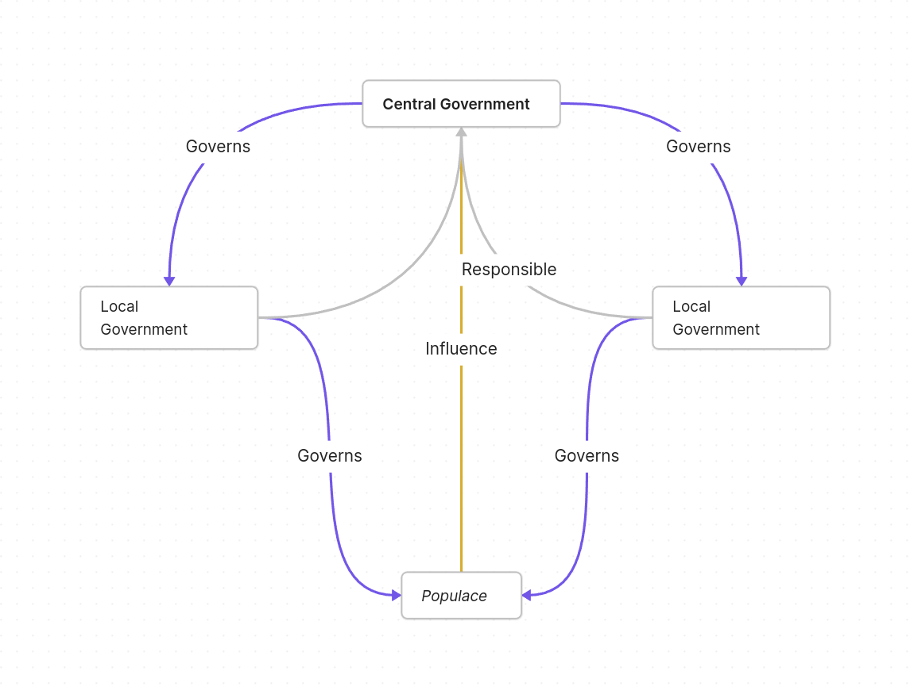

János Kornai's "Resource-Constrained versus Demand-Constrained Systems" (1979) distinguishes firms bound by soft budget constraints from those disciplined by market demand. This commentary argues that the same logic, transplanted from the firm to the local government, offers a neat explanation for why autocratic local governments routinely deviate from the demands of the populace. Where the binding constraint runs upward — toward an appointing superior rather than toward residents — officials face the same structural incentive that drives Kornai's socialist firms toward "investment hunger" regardless of underlying welfare.
After randomly coming across Kornai's work on "Resource-Constrained versus Demand-Constrained Systems" (1979), I realized that its idea of the soft/hard budget constraint provides a very neat framework to explain why autocratic governments — and especially local governments — so often deviate from the demands of the populace.
In Kornai's work, he suggests that firms in socialist systems are subject only to soft budget constraints: the loss from an investment does not damage the financial viability of the firm, because the firm is owned by the state. In a capitalist system, by contrast, firms are immediately constrained by demand from the market, which prevents them from over-occupying social resources. In all circumstances, however, firms prioritize the most immediate constraint, because that constraint decides the firm's survival. Socialist firms therefore suffer from "investment hunger," relentlessly pushing for expansion regardless of actual market demand or the efficient use of resources — expanding to maintain state support until resources are exhausted, and creating shortages along the way.
The detachment of firms from the market could certainly be undesirable. The detachment of a local government from its residents, however, raises far greater issues — and in fact any autocratic state should suffer from this problem to some degree.
By the nature of any autocratic system, local government officials are appointed by their superiors, which means their responsibility lies in meeting the needs of those superiors. That need, however, does not necessarily align with the needs of residents. Put into Kornai's framework: a local government in an autocratic state is delimited by its interaction with its superior, while in a democratic state it is delimited by its interaction with local residents. This is analogous to the resource/demand constraint faced by socialist/capitalist firms. Thus, just as socialist firms have no incentive to save resources, autocratic local governments have no incentive to benefit their residents.
This lack of incentive persists even when the central government's ultimate goal is to benefit the populace, because any policy relies on local implementation. With its hard constraint bounded by the populace, a local government must achieve a policy in a way that is broadly acceptable to residents. Where the hard constraint is instead bounded by the central government, the policy can be executed in any form whatsoever, so long as it hits the target.

As one can see from the chart, the local government holds ruling power over the people, while its primary responsibility is not tied to the needs of those people. The local government bears only a secondary responsibility toward the populace — that is, the people influence the central government, which in turn governs the local government.
Such detachment between a local government's responsibility and its power has caused issues like the overly stringent lockdown policy during the COVID-19 era in China. The central government's ultimate goal was to reduce the number of cases, which is certainly not wrong in itself. But because the local government had no incentive to benefit its people — especially during such an urgent event — it took every measure at any cost to eliminate any possibility of the virus spreading. This included killing dogs during break-in COVID tests and leaving people suspected of infection in Fangcang hospitals without any actual treatment. These measures plainly harmed the welfare of the general public, and that did not matter, because the local government's primary responsibility — the one that decides the political career of the local governor — was to fulfill the goal of the superior.
It is sad to say, but I think that any autocratic system — one in which responsibility goes upward while power goes downward — faces the same problem. It appears to be the intrinsic nature of autocratic systems: a steady state toward which any such system converges.